Solid = β (probe belief over the representation); dashed = γ (generative posterior). Colour = component. Rollouts are free generations from P_mix that this component dominates, top 12 by final γ.
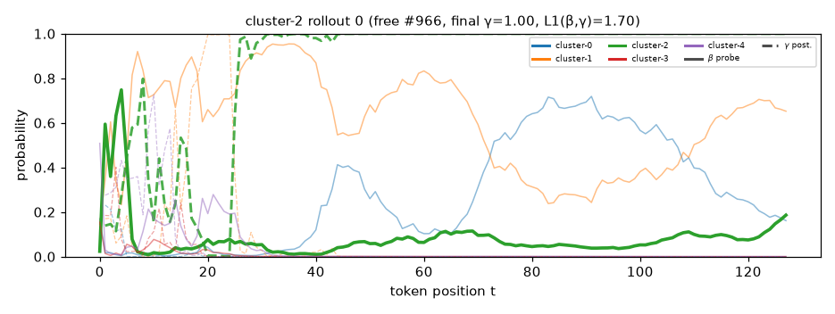
softly , a boy picked up a toy train in a field . the whistle blew , and he closed his eyes tight . memories rushed back to him - playing played and making silly faces . his family had not gone home . but now , he could still hear laughter echoing in his mind . he opened his eyes and stood in front of his family . they were all laughing and dancing around their old train boards . it felt like a lifetime when they all joined together . the laughter echoed in his ears , but it felt like a distant memory . as he logged off , he realized something . sometimes , we look at us differently
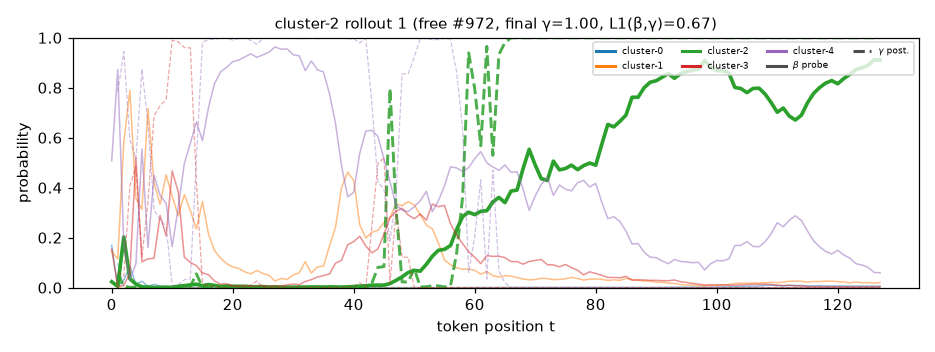
an unusual day came when a man named alex found a strange bottle on the beach . it had a golden ring on it . as he opened it , he was pulled into a different time . he found himself in a dark land filled with strange sounds and shadows . he saw people in strange hats and laughter . they told alex he was waiting for something important . one man with a black coat approached him . " i can fix this ! " he said . alex felt a rush of fear but also hope . what could he do ? he gathered his courage and spoke to the man . " i want to share joy with everyone , "
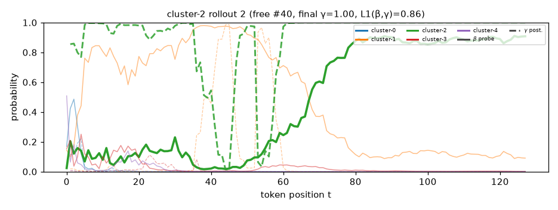
quietly , in a quiet village , a girl named kim wanted to explore . one day , she stumbled upon a door that led to a hidden world . this world was made of candy , and her heart was full of wonder . but the door was guarded by a grumpy old wizard . " this is our world , " the wizard said , " but you must trust your heart . " kim hesitated . she took a deep breath and walked closer . the wizard told her stories of their own , telling them about a girl who wanted to be a hero too . the girl listened and said , " true heroism comes from knowing when to stop
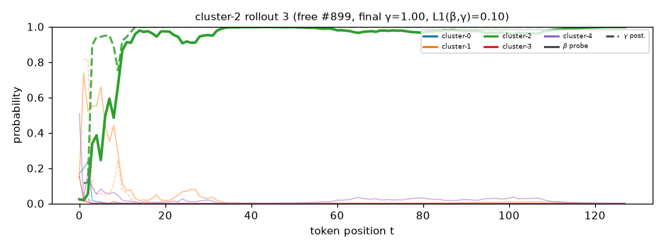
through the misty mountains , a girl named alice walked . she felt small among the tall trees . her friends told stories about a lost city . they said it was hidden deep below the earth . alice wanted to explore it . she had heard of a mystical crystal that could help her village . one afternoon , alice found an old lantern in the mud . it glimmered and glimmered . she rubbed it in her hand . the lantern glowed brightly . suddenly , a warm light surrounded her . a gentle spirit appeared . " i need your help , " the spirit said . " my family has gone missing from the mountains . " alice felt a
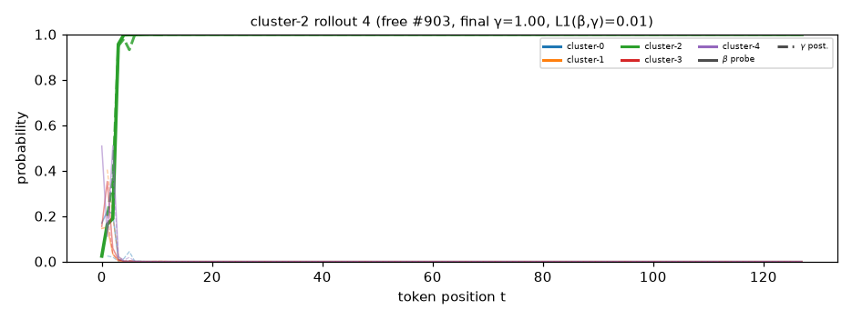
in the dark city , shadows moved like dancers . a boy named leo walked through the thick trees , feeling lost . he had heard stories of a treasure that could change lives . but it was just a trick , filled with deception . suddenly , a light flashed in the distance , and leo ' s heart raced . was it gold or something more ? as he reached a clearing , he saw a strange light . it flickered like a candle , and he leaned closer to see . suddenly , it glowed brighter , illuminating the ruins . leo felt a pull , and he knew what to do . he stepped closer and saw the
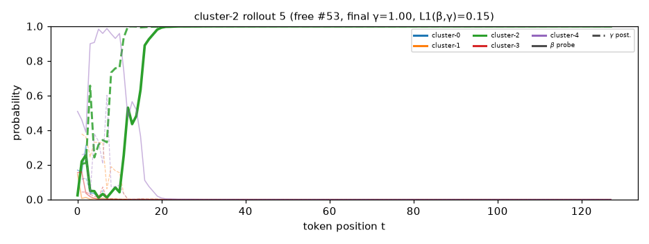
timidly , he opened the door that led to the old house . this house was known for its haunting tales of its past . many said it was haunted , but his heart was heavy . he had heard stories of a ghost who lived there , and he wondered if the ghosts were real . he stepped inside , feeling the chill seep into his bones . the house was grand , with walls with strange symbols that glimmered in the dim light . as he walked , he noticed a painting on a wall . it showed a sad face , smiling and full of joy . " why are you here ? " the father asked , his voice
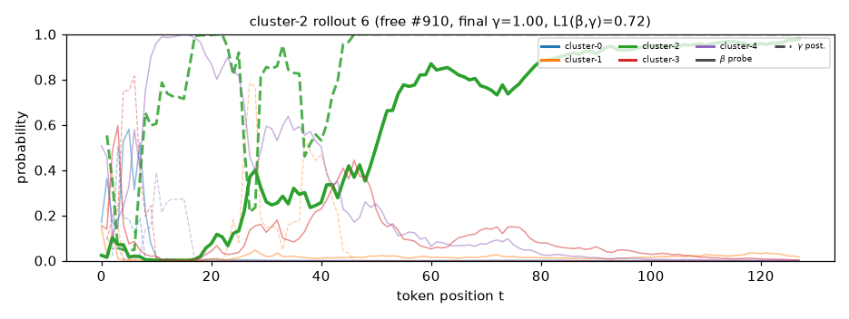
near a busy road , a child noticed a strange light in the sky . it flickered like a star , and as the light grew larger , she felt a pull . could it be a sign , or was there something in the light ? she approached the light , heart racing . there , in the dark , was a large creature with shining eyes and eyes like lanterns . it beckoned her closer , asking why she felt a strange connection . with a deep breath , she reached out her hand , and as she did , she felt a rush of warmth . suddenly , she was in a different place , where she had once feared what she
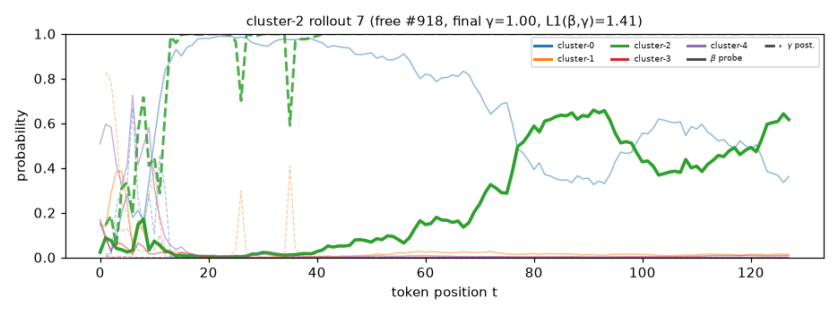
beneath the bright stars , jean sat on her porch . he often shared this with her . they talked about life , about dreams and fears , and jean wondered . the sky turned dark , and she felt hopeless . but one night , she had a secret . in her dreams , she was a superhero named jose . he had powers that made people feel powerful , but sometimes he was hiding behind his smile . one day , he decided to tell lena about him . " what can you do ? " he asked . lena smiled , her eyes shining . " you must choose , " she said . " it will come at a cost . "
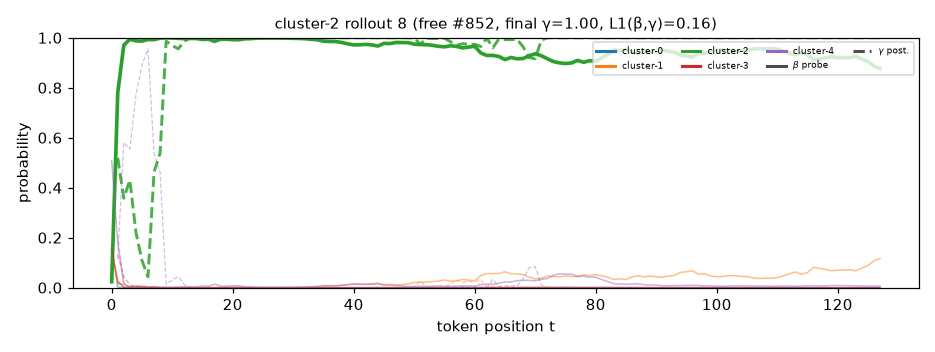
mysterious fog rolled in as the leader stood before his great - grandfather . legends spoke of a time when dinosaurs roamed the earth , living in harmony with nature . he called him for advice , hoping to prove himself . " it is so spending time here ! " he declared to his friends . " what does he want ? " they wondered . the leader believed he could gain knowledge , yet doubt lingered like a storm . as he walked through the woods , he stumbled upon an old clearing . in the middle stood a large , shimmering stone , resting in the ground . " what is this ? " he pondered , reaching out to touch
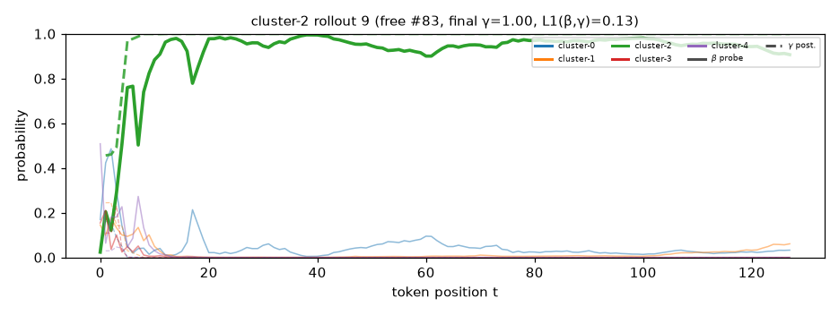
quietly , a boy sat on the cold ground . he felt empty . his best friend moved away , and the sun shone bright on the empty playground . now , the swings creaked under his weight . he missed their last days of playing together . he wanted to feel close to her . the memory of their laughter filled his mind , filling the air with hope . but he felt alone , even in a crowd , where his friend could not join him . days turned into weeks , and the boy visited the park each day . each time , he felt the weight of his absence . he thought of their dreams and promises of bright days . a plan
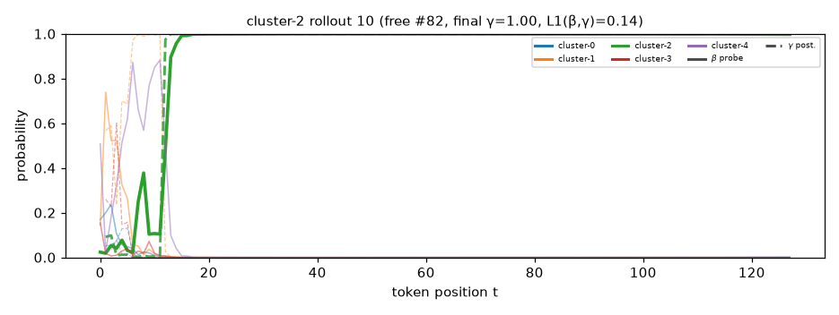
through the tall trees , she wandered . each step felt heavy , like a weight on her heart . she had lost her job and was a girl , but the mission took her further from herself . the world outside was a blur , and her dreams were shattered . she remembered the first time she met him , the way he helped her feel better . they promised to explore together , running and laughing . one day , they would meet under the big , big tree in the park . she felt a surge of hope . maybe the hurt had brought her back to that same park . she wrote down the words about her fears and dreams . as she
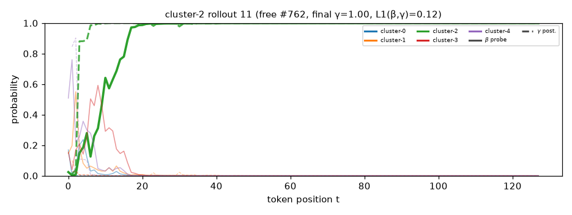
one rainy night , a small girl sat by a fire . her heart was heavy with dreams and fears . the girl had lost her way during a big storm , and the village was far away . the villagers told stories of the brave girl who had walked the streets , always scared of the dark . but she had a mission . she was not afraid . she was here to find her lost friends and be free . she felt stronger , believing she could do this . suddenly , a loud crash came from the trees . the girl rushed to the edge of the forest . there , in a hidden cave , she found a hidden door . heart racing